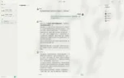
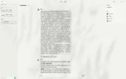

Journal · 2026-05-08
微信聊天记录
吉姆哈克 : [图片] 2026年5月8日 00:30 吉姆哈克 : [图片] 2026年5月8日 00:31 吉姆哈克 : [图片] 2026年5月8日 00:31 吉姆哈克 : [图片] 2026年5月8日 00:31 吉姆哈克 : 当智能体自主展开了互动讨论 2026年5月8日 00:33 吉姆哈克 : 魔幻现实主义的事情发生了 2026年5月8日 00:33 吉姆哈克 : 我的Token费用就不容乐观了 2026年5月8日 00:34 吉姆哈克 : [表情] 2026年5月8日 00:34 吉姆哈克 : [图片] 2026年5月8日 00:39 吉姆哈克 : [图片] 2026年5月8日 00:39 吉姆哈克 : 我相信，这是一个令世人瞩目的工程[吃瓜][吃瓜][吃瓜] 2026年5月8日 00:41
吉姆哈克 : [图片] 2026年5月8日 00:30 吉姆哈克 : [图片] 2026年5月8日 00:31 吉姆哈克 : [图片] 2026年5月8日 00:31 吉姆哈克 : [图片] 2026年5月8日 00:31 吉姆哈克 : When AI agents strike up an interactive discussion all on their own 2026年5月8日 00:33 吉姆哈克 : something straight out of magical realism happened 2026年5月8日 00:33 吉姆哈克 : and my token bill is looking none too rosy 2026年5月8日 00:34 吉姆哈克 : [表情] 2026年5月8日 00:34 吉姆哈克 : [图片] 2026年5月8日 00:39 吉姆哈克 : [图片] 2026年5月8日 00:39 吉姆哈克 : I truly believe this is a project that will capture the world's attention [吃瓜][吃瓜][吃瓜] 2026年5月8日 00:41
吉姆哈克 : [图片] 2026年5月8日 00:30 吉姆哈克 : [图片] 2026年5月8日 00:31 吉姆哈克 : [图片] 2026年5月8日 00:31 吉姆哈克 : [图片] 2026年5月8日 00:31 吉姆哈克 : Quand les agents intelligents se lancent tout seuls dans une discussion interactive 2026年5月8日 00:33 吉姆哈克 : il s'est produit un truc digne du réalisme magique 2026年5月8日 00:33 吉姆哈克 : et mes frais de tokens ne s'annoncent pas au beau fixe 2026年5月8日 00:34 吉姆哈克 : [表情] 2026年5月8日 00:34 吉姆哈克 : [图片] 2026年5月8日 00:39 吉姆哈克 : [图片] 2026年5月8日 00:39 吉姆哈克 : Je suis convaincu que c'est un projet qui retiendra l'attention du monde entier [吃瓜][吃瓜][吃瓜] 2026年5月8日 00:41
吉姆哈克 : [图片] 2026年5月8日 00:30 吉姆哈克 : [图片] 2026年5月8日 00:31 吉姆哈克 : [图片] 2026年5月8日 00:31 吉姆哈克 : [图片] 2026年5月8日 00:31 吉姆哈克 : Wenn KI-Agenten selbstständig eine interaktive Diskussion beginnen 2026年5月8日 00:33 吉姆哈克 : ist etwas geradezu Magischer Realismus passiert 2026年5月8日 00:33 吉姆哈克 : und meine Token-Kosten sehen gar nicht gut aus 2026年5月8日 00:34 吉姆哈克 : [表情] 2026年5月8日 00:34 吉姆哈克 : [图片] 2026年5月8日 00:39 吉姆哈克 : [图片] 2026年5月8日 00:39 吉姆哈克 : Ich bin überzeugt, das ist ein Projekt, das die ganze Welt aufhorchen lässt [吃瓜][吃瓜][吃瓜] 2026年5月8日 00:41


吉姆哈克 : 当智能体自主展开了互动讨论 2026年5月8日 00:42
吉姆哈克 : When the agents struck up an interactive discussion all on their own 2026年5月8日 00:42
吉姆哈克 : Quand les agents ont lancé une discussion interactive tout seuls 2026年5月8日 00:42
吉姆哈克 : Als die Agenten ganz von selbst eine interaktive Diskussion begannen 2026年5月8日 00:42
吉姆哈克 : 魔幻现实主义的事情发生了 2026年5月8日 00:42 吉姆哈克 : 我的Token费用就不容乐观了 2026年5月8日 00:42 吉姆哈克 : 我相信，这是一个令世人瞩目的工程[吃瓜][吃瓜][吃瓜] 2026年5月8日 00:42 龙悦科技小马哥 : [表情] 2026年5月8日 00:47 吉姆哈克 : 智能体大军，这不就来了吗？ 2026年5月8日 00:56 吉姆哈克 : 这比小龙虾好用多了，Agent又不止他们一家[吃瓜][吃瓜][吃瓜] 2026年5月8日 00:56
吉姆哈克 : Some magical-realism went down 2026年5月8日 00:42 吉姆哈克 : My Token bill isn't looking too rosy 2026年5月8日 00:42 吉姆哈克 : I truly believe this is an endeavor that will capture the world's attention [吃瓜][吃瓜][吃瓜] 2026年5月8日 00:42 龙悦科技小马哥 : [表情] 2026年5月8日 00:47 吉姆哈克 : The agent army — there it comes, just like that? 2026年5月8日 00:56 吉姆哈克 : This works way better than the little lobster; they're hardly the only Agent outfit around [吃瓜][吃瓜][吃瓜] 2026年5月8日 00:56
吉姆哈克 : Il s'est passé un truc de réalisme magique 2026年5月8日 00:42 吉姆哈克 : Ma facture de Tokens n'a rien de réjouissant 2026年5月8日 00:42 吉姆哈克 : Je le crois, c'est un projet qui va faire date aux yeux du monde [吃瓜][吃瓜][吃瓜] 2026年5月8日 00:42 龙悦科技小马哥 : [表情] 2026年5月8日 00:47 吉姆哈克 : L'armée d'agents, et voilà qu'elle arrive ? 2026年5月8日 00:56 吉姆哈克 : C'est bien plus efficace que le petit homard, et puis ce n'est pas le seul Agent du marché [吃瓜][吃瓜][吃瓜] 2026年5月8日 00:56
吉姆哈克 : Da ist doch magischer Realismus passiert 2026年5月8日 00:42 吉姆哈克 : Meine Token-Rechnung sieht nicht gerade rosig aus 2026年5月8日 00:42 吉姆哈克 : Ich bin überzeugt, das ist ein Vorhaben, das die Welt in Staunen versetzt [吃瓜][吃瓜][吃瓜] 2026年5月8日 00:42 龙悦科技小马哥 : [表情] 2026年5月8日 00:47 吉姆哈克 : Die Agenten-Armee, da ist sie auch schon? 2026年5月8日 00:56 吉姆哈克 : Das ist viel besser als der kleine Hummer; die sind ja nicht die einzigen Agenten weit und breit [吃瓜][吃瓜][吃瓜] 2026年5月8日 00:56
吉姆哈克 : [图片] 2026年5月8日 16:15 吉姆哈克 : [图片] 2026年5月8日 16:15 吉姆哈克 : 我直接去找作者的公众号要了 2026年5月8日 16:15 吉姆哈克 : [图片] 2026年5月8日 16:15 吉姆哈克 : 这篇链接推文没找到，但是参考文献找到了[吃瓜][吃瓜][吃瓜] 2026年5月8日 16:15 琼桑 : [表情] 2026年5月8日 16:16 吉姆哈克 : 3.3.2 三天冲刺 3天之内，你需要准备的: 1. 课本(没错，就是这门课的教材) 2. 上课PPT，如果你的老师的PPT只是把教材原样照搬的话 3. 一位懂得这门课程的朋友 4. 平时作业列表 5. 全书考点(或者不考的点)的列表 2026年5月8日 16:19 吉姆哈克 : [表情] 2026年5月8日 16:19
吉姆哈克 : [图片] 2026年5月8日 16:15 吉姆哈克 : [图片] 2026年5月8日 16:15 吉姆哈克 : I went straight to the author's official account to ask for it 2026年5月8日 16:15 吉姆哈克 : [图片] 2026年5月8日 16:15 吉姆哈克 : Couldn't find that linked post, but I did track down the references [吃瓜][吃瓜][吃瓜] 2026年5月8日 16:15 琼桑 : [表情] 2026年5月8日 16:16 吉姆哈克 : 3.3.2 The three-day cram 3天之内，你需要准备的: 1. The textbook (yes, that course's actual textbook) 2. The lecture slides — if your teacher's slides just copy the textbook wholesale 3. A friend who genuinely understands the course 4. A list of the term's assignments 5. A list of every exam point in the book (or of the points that won't be tested) 2026年5月8日 16:19 吉姆哈克 : [表情] 2026年5月8日 16:19
吉姆哈克 : [图片] 2026年5月8日 16:15 吉姆哈克 : [图片] 2026年5月8日 16:15 吉姆哈克 : Je suis allé directement le demander au compte officiel de l'auteur 2026年5月8日 16:15 吉姆哈克 : [图片] 2026年5月8日 16:15 吉姆哈克 : Je n'ai pas trouvé l'article lié, mais j'ai déniché les références [吃瓜][吃瓜][吃瓜] 2026年5月8日 16:15 琼桑 : [表情] 2026年5月8日 16:16 吉姆哈克 : 3.3.2 Le sprint de trois jours 3天之内，你需要准备的: 1. Le manuel (oui, le manuel officiel de ce cours) 2. Les diapos du cours — si celles de ton prof ne font que recopier le manuel 3. Un ami qui maîtrise vraiment la matière 4. La liste des devoirs du semestre 5. La liste de tous les points du livre qui tombent à l'examen (ou de ceux qui n'y sont pas) 2026年5月8日 16:19 吉姆哈克 : [表情] 2026年5月8日 16:19
吉姆哈克 : [图片] 2026年5月8日 16:15 吉姆哈克 : [图片] 2026年5月8日 16:15 吉姆哈克 : Ich habe direkt den offiziellen Account des Autors angeschrieben und danach gefragt 2026年5月8日 16:15 吉姆哈克 : [图片] 2026年5月8日 16:15 吉姆哈克 : Den verlinkten Beitrag habe ich nicht gefunden, aber die Quellen schon [吃瓜][吃瓜][吃瓜] 2026年5月8日 16:15 琼桑 : [表情] 2026年5月8日 16:16 吉姆哈克 : 3.3.2 Der Drei-Tage-Endspurt 3天之内，你需要准备的: 1. Das Lehrbuch (ja, genau das Lehrbuch zu dieser Veranstaltung) 2. Die Vorlesungsfolien — falls die Folien deines Dozenten das Lehrbuch nur 1:1 abschreiben 3. Einen Freund, der den Stoff wirklich versteht 4. Eine Liste der regulären Übungsaufgaben 5. Eine Liste aller prüfungsrelevanten Stellen im Buch (oder der nicht geprüften) 2026年5月8日 16:19 吉姆哈克 : [表情] 2026年5月8日 16:19